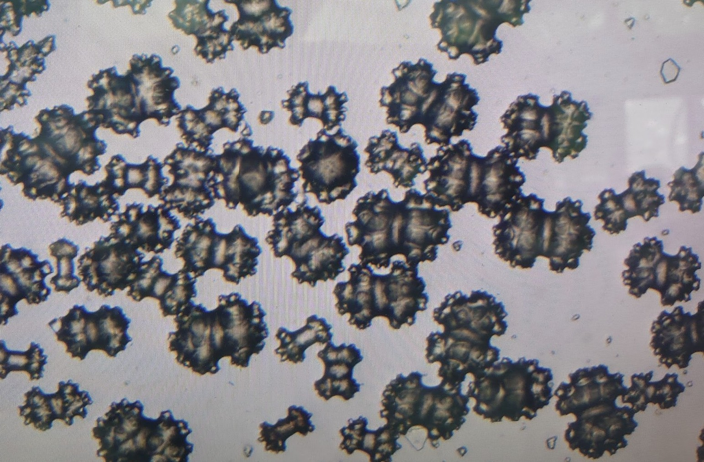

Overview計畫概述
This project is a long-term collaboration with Prof. Chang-Feng Dai (National Taiwan University) to produce the most comprehensive illustrated guide to the octocoral fauna of Taiwan. Octocorals — including soft corals, gorgonians, and sea pens — are ecologically important yet taxonomically challenging organisms that remain poorly documented across much of the Indo-Pacific. This field guide aims to fill that gap by combining rigorous morphological taxonomy with high-quality field and microscopic imagery.
本計畫是與國立台灣大學戴昌鳳教授的長期合作，旨在編撰台灣最完整的八放珊瑚圖鑑。八放珊瑚——包括軟珊瑚、柳珊瑚和海筆——是生態上重要但分類學上極具挑戰的生物類群，在印度洋—太平洋大部分區域的文獻記錄仍然不足。本圖鑑結合嚴謹的形態分類學與高品質的野外及顯微攝影，期望填補這一知識缺口。
My Contributions我的貢獻
- Field Photography — Documenting live octocoral specimens in their natural habitats across multiple reef sites in Taiwan, capturing colony morphology, colour variation, and ecological context through underwater photography.
野外攝影——在台灣多處礁點記錄活體八放珊瑚標本的自然棲地樣貌，透過水下攝影捕捉群體形態、色彩變異與生態背景。 - Sclerite Microphotography — Preparing and photographing the microscopic calcium carbonate sclerites that are critical for species-level identification. These tiny skeletal elements (typically 0.1–2 mm) vary in shape and ornamentation among species and serve as key diagnostic characters.
骨針顯微攝影——製備並拍攝對物種鑑定至關重要的微小碳酸鈣骨針。這些細小的骨骼元素（通常 0.1–2 mm）在不同物種間的形態與裝飾各異，是重要的鑑定特徵。 - Manuscript Proofreading — Reviewing and proofreading the bilingual (Chinese and English) manuscripts for taxonomic accuracy, consistency, and readability.
校稿——審閱與校對中英文雙語書稿，確保分類學準確性、一致性與可讀性。

Octocoral colony in situ · 八放珊瑚野外群體

Sclerite microphotography · 骨針顯微攝影
About the Field Guide關於本圖鑑
The Chinese illustrated field guide, Corals of Taiwan Vol. 2: Octocorallia (台灣珊瑚全圖鑑（下）：八放珊瑚), was published in January 2022 by Owl Publishing House (貓頭鷹出版社). Spanning 408 pages, it documents 291 species across 21 families with over 2,287 photographs covering colony morphology, polyp extension/contraction, and sclerite micrographs — approximately 70 of which were documented in a Taiwanese publication for the first time. Species classification follows the World Register of Marine Species (WoRMS) system.
中文版圖鑑《台灣珊瑚全圖鑑（下）：八放珊瑚》已於 2022 年 1 月由貓頭鷹出版社出版，全書 408 頁，收錄 21 科 291 種，並收錄超過 2,287 張群體形態、水螅體伸縮及骨針顯微照片，其中約 70 種為台灣出版品首次記錄。物種分類依據最新的 WoRMS 世界海洋物種名錄系統。
The English academic monograph, Octocorallia Fauna of Taiwan (臺灣八放珊瑚動物誌), was published in August 2021 by National Taiwan University Press (國立臺灣大學出版中心). At 672 pages, it synthesises 35 years of taxonomic and ecological research and is described as the first detailed faunal study of octocorallia in Taiwan and the West Pacific, covering the same 291 species in three orders and 21 families.
英文版學術專著《臺灣八放珊瑚動物誌（Octocorallia Fauna of Taiwan）》已於 2021 年 8 月由國立臺灣大學出版中心出版，全書 672 頁，匯集 35 年分類與生態研究成果，是台灣乃至西太平洋首部系統性八放珊瑚動物誌，涵蓋三目 21 科 291 種。